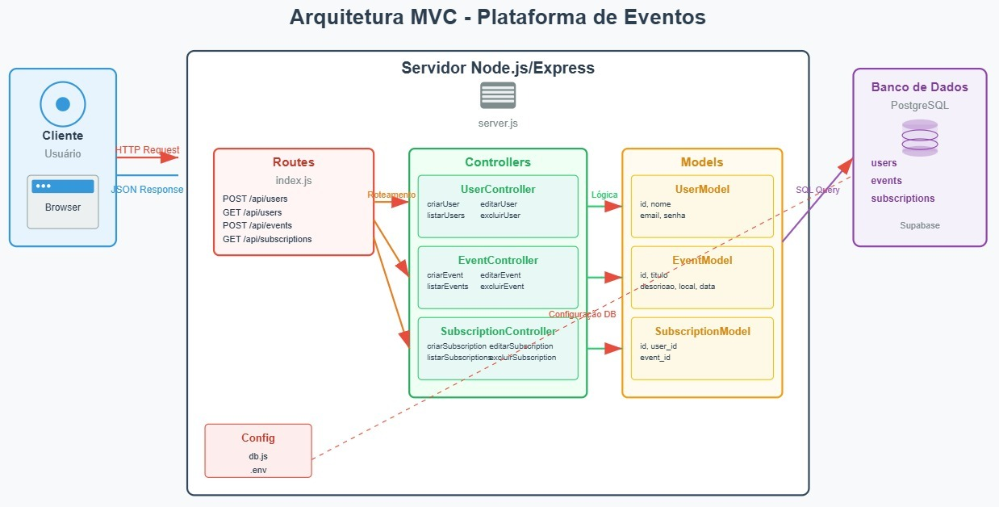

Este sistema é uma plataforma para criação e inscrição em eventos, com autenticação de usuários.
O sistema segue o padrão arquitetural Model-View-Controller (MVC), proporcionando uma separação clara de responsabilidades e facilitando a manutenção e escalabilidade da aplicação.
Arquivo: src/routes/index.js
Responsabilidade: Definir endpoints da API e mapear para controllers
Rotas principais:
POST/GET/PUT/DELETE /api/usersPOST/GET/PUT/DELETE /api/eventsPOST/GET/PUT/DELETE /api/subscriptionsLocalização: src/controllers/
Responsabilidade: Processar requisições, executar lógica de negócio e retornar respostas
criarUser() - Criar novo usuáriolistarUsers() - Listar todos os usuárioseditarUser() - Editar usuário existenteexcluirUser() - Excluir usuáriocriarEvent() - Criar novo eventolistarEvents() - Listar todos os eventoseditarEvent() - Editar evento existenteexcluirEvent() - Excluir eventocriarSubscription() - Criar nova inscriçãolistarSubscriptions() - Listar todas as inscrições
editarSubscription() - Editar inscrição existente
excluirSubscription() - Excluir inscriçãoLocalização: src/models/
Responsabilidade: Interagir com o banco de dados e definir estrutura dos dados
id, nome, email,
senha
usersid, titulo,
descricao, local, data,
user_id
eventsid, user_id, event_id
subscriptionsdb.js: Configuração da conexão com PostgreSQL.env: Variáveis de ambiente (credenciais do banco)pg,
dotenv, cors